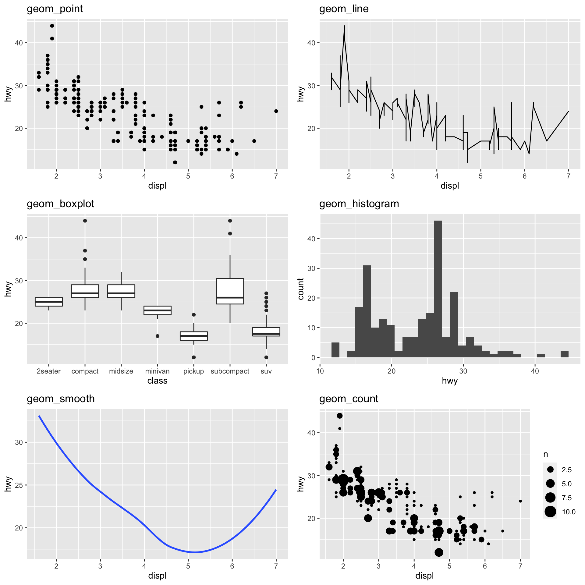
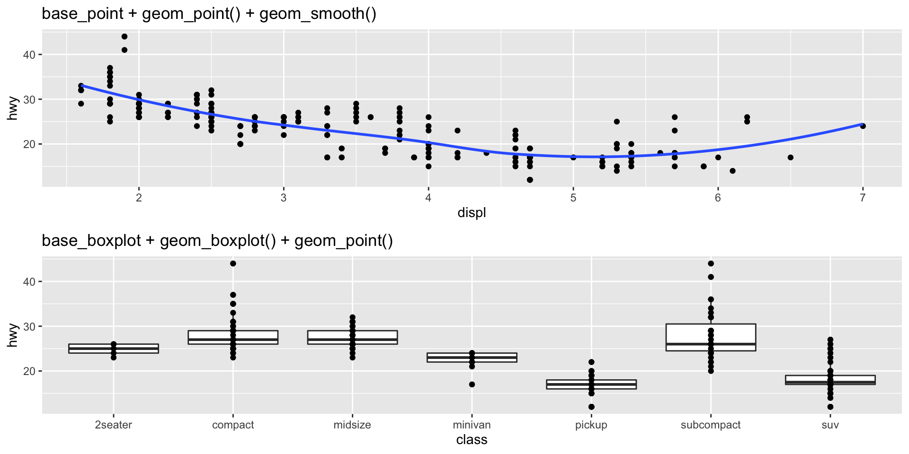
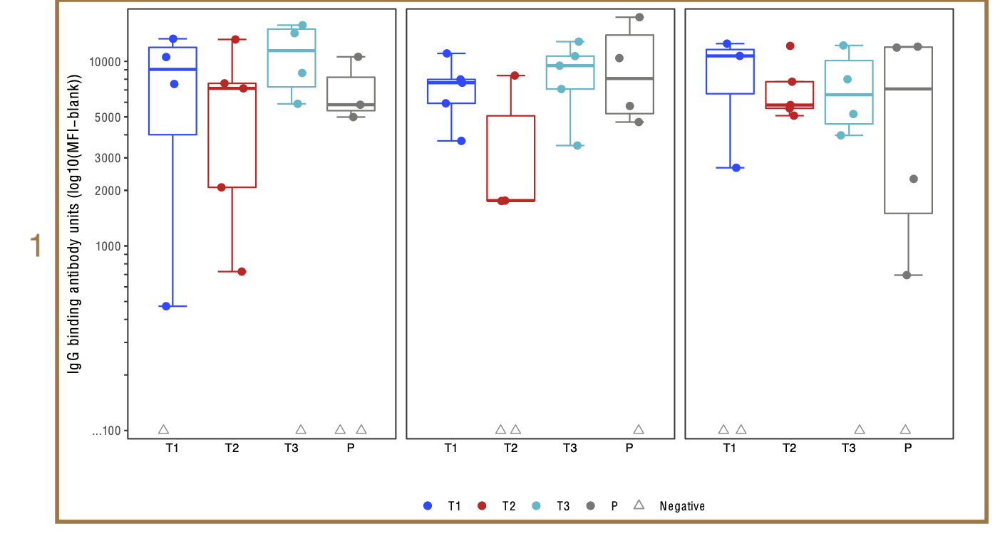
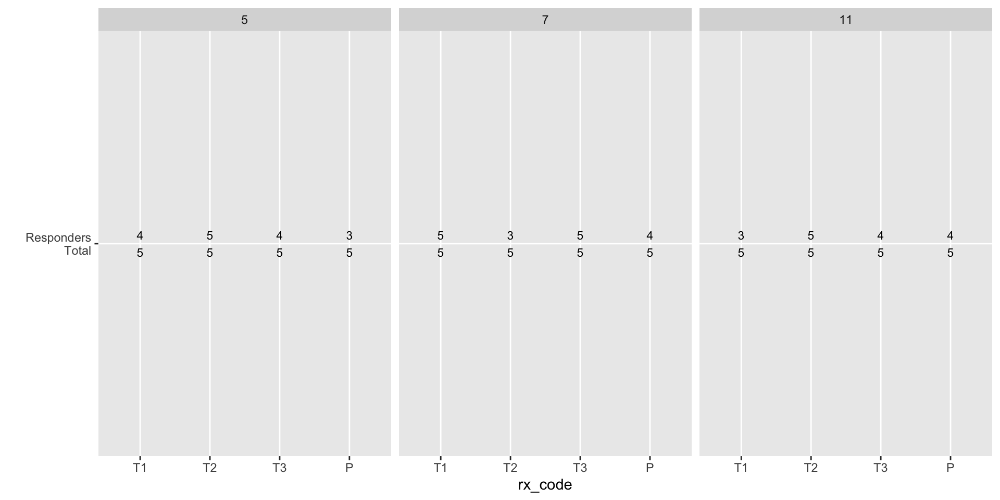

Bryan Mayer
2022-10-26
ggplot2-worksheet-hvtn2022.Rmd
ggplot2 is the only required library for the exercises.mock_bama_exampleTidyverse help page: https://ggplot2.tidyverse.org/reference
Hadley Wickham’s text: R for Data Science
The presentation and code are publicly available on GitHub: https://github.com/bryanmayer/hvtn-ggplot2-workshop
Basic template:
In action:
plot() on the backend, so knowledge helpful.par(mfrow = c(1,2))
plot(mpg$displ, mpg$hwy)
plot(x = mpg[mpg$class == "compact", ]$displ,
y =mpg[mpg$class == "compact", ]$hwy,
col = "orange", xlim = c(1.5, 7),
ylab = "hwy", xlab = "displ")
points(x = mpg[mpg$class == "2seater", ]$displ,
y = mpg[mpg$class == "2seater", ]$hwy,
col = "red")
legend(x = 3, y = 40, c("compact", "2seater"),
col = c("orange", "red"), pch = 1)# explicitly stating 'mapping = aes()' is uncommon. "data = " necessary for geom assignments.
plA = ggplot(data = <DATA>, aes(<MAPPINGS>)) +
<GEOM_FUNCTION>()
plB = ggplot(aes(<MAPPINGS>)) +
<GEOM_FUNCTION>(data = <DATA>)
plC = ggplot(data = <DATA>) +
<GEOM_FUNCTION>(aes(<MAPPINGS>))
plD = ggplot() +
<GEOM_FUNCTION>(data = <DATA>, aes(<MAPPINGS>))ggplot() function initializes/creates a new plot.+ is a ggplot2 operator (function) used to build a plot over function layers.<GEOM_FUNCTION>() (ex. geom_point() scatterplot) draws a geometry on the plot. I.e., ‘plot type’(s).data argument for setting a data set and aes() function sets aesthetic mappings by variable.
ggplot() sets global mappings across all plots.geom_**() will supersede global assignment but not apply to other geoms (local).
| Type | Function |
|---|---|
| Scatter/Point | geom_point() |
| Line | geom_line() |
| Box plot | geom_boxplot() |
| Bar plot | geom_bar(), geom_col() |
| Histogram | geom_histogram() |
| Density | geom_density() |
| Regression/Spline | geom_smooth() |
| Text | geom_text() |
| Vert./Horiz. Line | geom_{vh}line() |
| Jittered Point | geom_jitter() |
| Count | geom_count() |
https://eric.netlify.com/2017/08/10/most-popular-ggplot2-geoms/
Plots with multiple geometries can be quickly made by layering.
Aesthetic mappings within aes() link data to an aesthetic.
Mappings depend on plot geometries.
?geom_text).> base_boxplot + geom_histogram()
Error in
f(): ! stat_bin() can only have an x or y aesthetic. Runrlang::last_error()to see where the error occurred.
| Aesthetic | aes() Argument |
|---|---|
| x-axis | x |
| y-axis | y |
| Color outline | color |
| Color fill | fill |
| Point shape/type | shape |
| Point size | size |
| Opacity | alpha |
| Line type | linetype |
| Text | label |
aes() argument.
aes() is a data mapping, ggplot2 will assume this a variable with a single value.aes() calls.
aes(y = log10(magnitude)), aes(y = pmax(1, magnitude)).factor() if need discrete mapping.Question: Did highway mpg (hwy) improve between 1999 and 2008 (year)?
Data fields: hwy year (which is x?, which is y?)
Geometry? geom_boxplot
Mappings: let’s map year to color.
Take 5 minutes to make this plot. Work with your neighbor.
05:00
Why Factor?
name) is always the element (legend or axis) title. Default to variable name.limits, breaks, labels
scale_*_discrete(), scale_*_manual(), scale_*_continuous()scale_*_discrete()): tinkering with palettes, labels, and breaks.
scale_x_discrete, scale_y_discrete) is not always intuitive (e.g., use limits instead of breaks).scale_*_manual): explicit mapping of data level to a setting.
scale_color_manual(breaks = c("A", "B"), labels = c("A", "B"), values = c("red", "blue"))breaks = dataframe$breaks, labels = dataframe$labels, values = dataframe$colorscyl_colors = c(`4` = "red", `5` = "green",
`6` = "purple", `8` = "black")
cyl_labels = paste(c(4, 5, 6, 8), "cylinder")
names(cyl_labels) = c(4, 5, 6, 8)
ggplot(data = mpg,
aes(x = displ, y = hwy,
colour = factor(cyl))) +
geom_point() +
scale_color_manual("cylinder #",
values = cyl_colors,
labels = cyl_labels)scale_x_continuous and scale_y_continuous.
scale_x_log10 and scale_y_log10.coord_cartesian(): default. Limit arguments can be used to zoom plot (Example).coord_flip(): flips x and y on the plots.coord_polar(): use polar coordinate system.coord_fixed(): fixes aspect ratio, make ‘square’ plots.scale_y_continuous("y title", breaks = 5*3:9).labs(x = "x title", y = "y title" color = "legend title")xlab(), ylab()theme():
?theme).theme_bw() theme_classic()Take 5 minutes. Work with your neighbor.
+ theme_classic()05:00
facet_grid or facet_wrap create multiple panels across a variable level.facet_grid: structured, explicit mapping of rows and col (rectangular matrix).
+ facet_grid(rows = vars(var1), cols = vars(var2)) or + facet_grid(var1 ~ var2)+ facet_grid(rows = vars(var1)) or + facet_grid(var1 ~ .)+ facet_grid(cols = vars(var1)) or + facet_grid(. ~ var1)facet_wrap: sequence of panels across variable or layered variables.
+ facet_wrap(vars(var1)) or + facet_wrap(~ var1)class.Figure can be built in 3 parts. Focus just on magnitude plot.
Rows: 60
Columns: 12
$ labid <chr> "Frankenstein", "Frankenstein", "Frankenstein", "Franken…
$ pub_id <int> 1, 2, 3, 4, 5, 6, 7, 8, 9, 10, 11, 12, 13, 14, 15, 16, 1…
$ rx_code <chr> "P", "T1", "T2", "T3", "P", "T1", "T2", "T3", "P", "T1",…
$ visitno <dbl> 5, 5, 5, 5, 5, 5, 5, 5, 5, 5, 5, 5, 5, 5, 5, 5, 5, 5, 5,…
$ isotype <chr> "IgG", "IgG", "IgG", "IgG", "IgG", "IgG", "IgG", "IgG", …
$ antigen <chr> "ag_b", "ag_b", "ag_b", "ag_b", "ag_b", "ag_b", "ag_b", …
$ gene <chr> "gp120", "gp120", "gp120", "gp120", "gp120", "gp120", "g…
$ clade <chr> "B", "B", "B", "B", "B", "B", "B", "B", "B", "B", "B", "…
$ fi_bkgd <dbl> 11985.2477, 6188.5244, 6611.3519, 12819.1074, 5344.8246,…
$ fi_bkgd_blank <dbl> 6164.825, 6194.799, 4535.088, 4173.354, 5556.441, 6911.0…
$ delta <dbl> 5820.4230, 1.0000, 2076.2640, 8645.7529, 1.0000, 471.266…
$ response <dbl> 1, 0, 1, 1, 0, 1, 1, 0, 1, 1, 1, 1, 1, 1, 1, 1, 0, 1, 1,…We have fixed colors and shapes, let’s assign those now:

Rows: 60
Columns: 12
$ labid <chr> "Frankenstein", "Frankenstein", "Frankenstein", "Franken…
$ pub_id <int> 1, 2, 3, 4, 5, 6, 7, 8, 9, 10, 11, 12, 13, 14, 15, 16, 1…
$ rx_code <chr> "P", "T1", "T2", "T3", "P", "T1", "T2", "T3", "P", "T1",…
$ visitno <dbl> 5, 5, 5, 5, 5, 5, 5, 5, 5, 5, 5, 5, 5, 5, 5, 5, 5, 5, 5,…
$ isotype <chr> "IgG", "IgG", "IgG", "IgG", "IgG", "IgG", "IgG", "IgG", …
$ antigen <chr> "ag_b", "ag_b", "ag_b", "ag_b", "ag_b", "ag_b", "ag_b", …
$ gene <chr> "gp120", "gp120", "gp120", "gp120", "gp120", "gp120", "g…
$ clade <chr> "B", "B", "B", "B", "B", "B", "B", "B", "B", "B", "B", "…
$ fi_bkgd <dbl> 11985.2477, 6188.5244, 6611.3519, 12819.1074, 5344.8246,…
$ fi_bkgd_blank <dbl> 6164.825, 6194.799, 4535.088, 4173.354, 5556.441, 6911.0…
$ delta <dbl> 5820.4230, 1.0000, 2076.2640, 8645.7529, 1.0000, 471.266…
$ response <dbl> 1, 0, 1, 1, 0, 1, 1, 0, 1, 1, 1, 1, 1, 1, 1, 1, 0, 1, 1,…geom_boxplot, geom_point (jitter)delta), groups (rx_code), response (response)response to shapevisitno)ggplot(mock_bama_example, aes(...)) +
geom_boxplot(..., show.legend = F, outlier.colour = NA) +
geom_point(..., position = position_jitter(width = 0.2)) +
scale_shape_manual(values = c(2, 16)) +
scale_color_manual(values = hvtn_pl_colors) +
scale_x_discrete(limits = ...) +
scale_y_...() +
facet_wrap(...) +
labs(...) +
theme_classic() geom_boxplot, geom_point (jitter)delta), groups (rx_code), response (response)response to shapevisitno)05:00
rx_code to x-axis, but need new map to color.03:00
set.seed(14) # this keeps the jitter consistent each time
mag_bp_v2 = ggplot(data = mock_bama_example,
aes(x = rx_code, y = pmax(100, delta), color = grp_response)) +
geom_boxplot(data = subset(mock_bama_example, response == 1),
show.legend = F, outlier.colour = NA) +
geom_point(aes(shape = grp_response, group = rx_code),
position = position_jitter(width = 0.2)) +
scale_colour_manual("", values = hvtn_pl_colors) +
scale_shape_manual("", values = hvtn_pl_shapes) +
scale_x_discrete(limits = axis_grp_order) +
scale_y_log10(breaks = c(100, 1000, 2000, 3000, 5000, 10000),
label = c("< 100", 1000, 2000, 3000, 5000, 10000)) +
facet_wrap(~visitno) +
labs(y = "IgG binding antibody units (MFI - blank)", x = "") +
theme_classic() +
theme(panel.background = element_rect(color="black"), legend.position = "bottom")theme().
strip.text = element_blank()panel.background = element_rect(color="black").Walkthrough parts 2 and 3. Code is in the worksheet.
Approach: Summarize the data and get the text aligned on a plot.
response_rate_summary = mock_bama_example %>%
group_by(rx_code, antigen, visitno) %>%
summarize(
Total = n(),
Responders = sum(response),
rr = mean(response),
.groups = "drop"
)
rr_txt_pl_skeleton = ggplot(response_rate_summary,
aes(x = rx_code, y = 1,
label = paste(Responders, Total, sep = "\n"))) +
geom_text(size = 3) +
scale_x_discrete(limits = axis_grp_order) +
scale_y_continuous(breaks = 1, labels = "Responders\nTotal", expand = c(0, 0)) +
facet_wrap(~visitno) +
labs(y = "")
rr_txt_pl_skeleton
Use theme() to remove most plot elements. The axes coordinates are invisible but remain aligned with group.
rr_txt_pl = rr_txt_pl_skeleton +
theme(panel.background = element_blank(), axis.text.x = element_blank(),
axis.title.x = element_blank(), axis.ticks = element_blank(),
strip.background = element_blank(), strip.text = element_blank(),
axis.text.y = element_text(size = 10), plot.margin = margin())
rr_txt_plstat_summary_bin applied to the full dataset.geom_bar(stat = 'identity') (see worksheet).resp_rate1 = ggplot(mock_bama_example, aes(x = rx_code, y = 100*response, fill = rx_code)) +
stat_summary_bin(fun = "mean", geom = "bar") +
scale_fill_manual(values = hvtn_pl_colors, guide = "none") +
scale_x_discrete(limits = axis_grp_order) +
scale_y_continuous(expand = c(0, 0), limits = c(0, 102)) +
labs(y = "Response rate (%)", x = "") +
facet_wrap(~visitno, labeller =
as_labeller(c(`5` = "Visit 5",
`7` = "Visit 7",
`11` = "Visit 11"))) +
theme_classic() +
theme(strip.background = element_blank(), panel.background = element_rect(color="black"),
plot.title = element_text(size = 12)) +
ggtitle("HVTN Trial IgG Antibody Responses to ag_b")
resp_rate1 cowplot::plot_gridggplot(data = mock_bama_example, aes(x = rx_code, y = pmax(100, delta),
color = rx_code)) +
geom_boxplot(data = subset(mock_bama_example, response == 1),
show.legend = F,
outlier.colour = NA) +
geom_point(aes(shape = factor(response), group = rx_code),
position = position_jitter(width = 0.2)) +
scale_colour_manual("", values = hvtn_pl_colors) +
scale_shape_manual("", values = c(2, 16)) +
scale_x_discrete(limits = axis_grp_order) +
scale_y_log10(breaks = c(100, 1000, 2000, 3000, 5000, 10000)) +
facet_wrap(~ visitno) +
labs(y = "IgG binding antibody units (MFI - blank)", x = "") +
theme_classic()